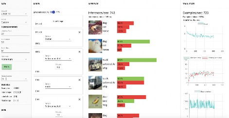

ASSIGNMENT 2
Problem 1
x
The layer is invalid due to continuity of the network. We need to add intermediate layers that convert the parameters to the corresponding format.

It performs badly because of two reasons. The first one -more obvious- is because of the random weights applied to the operation. The second is due to the small amount of units in the FC layer.
Problem 2

On MINST, It performs better since the network has been trained and the inferences raised from 1050 / sec to approximately 1600/sec with 1460 examples/ second/.
By applying multiple linearly activated layers to our NN makes it worst because no matter how many layers or neurons to our network the result will be always a linear function. Each layer would get the weighted values from the previous linear function and will calculate a weighted sum on that input - it will fire every time on another linear activation function.

The model starts really bad at the beginning, slowly increasing the accuracy over time. The results are as low as 37% avg. I wonder if this is produced because of the RELU activating only too little amount of neurons.

The model performs better with accuracies over 98 % (2 minutes training) Introducing RELU and adding more units to the first FC layer makes a difference in terms of speed and ''lightness' of the network because of its outputs producing -I guess- a sparse activation of the neurons (if some are 0 then they don't activate). Therefore is less computationally expensive due to the use of a simpler mathematical operations.

CASE 1: INPUT > FLATTEN > FC(100) > RELU > SoftMax > Label - Training time 120 sec.
The model has an accuracy close to 91%, with an average of 1450 inferences per second and approximately 1400 Examples per second.
CASE 1: INPUT > FLATTEN > FC(100) > RELU > SoftMax > Label - Training time 120 sec. approx

CASE 2: INPUT > FLATTEN > FC(100) > RELU > FC(10) > RELU > FC(10) > RELU > SoftMax > Label - Training time 120 sec. approx
The model has an accuracy close to 91%, with an average of 1450 inferences per second and approximately 1400 Examples per second.
The model performs slower and compared to the previous one it takes longer in getting good results. after 90 seconds it reaches good results. with less inferences and less examples


CASE 3: INPUT > FLATTEN > FC(100) > RELU > FC(10) > RELU > FC(10) > RELU > FC(10) > RELU > SoftMax > Label - Training time 120 sec. approx
by adding one more FC layer and another RELU in between, it performs slightly better than the previous one.
CASE 4: INPUT > FLATTEN > FC(100) > RELU > FC(10) > RELU > FC(10) > RELU > FC(10) > RELU > FC(10) > RELU > SoftMax > Label - Training time 120 sec. approx

Adding another FC and RELU layers makes it worst and slower in terms of both accuracy and speed.
Probably it shows signs of overfitting.

CASE 4: INPUT > FLATTEN > FC(100) > RELU > FC(10) > RELU > FC(10) > RELU > FC(10) > RELU > FC(10) > RELU > FC(10) > RELU > SoftMax > Label - Training time 120 sec. approx
Finally , adding a 5th FC layer, shows that the model performs worst because is overfitting.
In my opinion and based on results, using 3 FC layers with RELU in between performed better than other configurations.
Making the first layer wider (FC(300)) , the NN performs well and fast enough

Results are not very good when using the same configuration in Fashion MNIST.

Repeating the same configuration on CIFAR-10, it performs really bad.
Inverting the number of units , makes que second NN perform really bad. My guess is that this is due to the small number of neurons in the first layer, the NN doesn't 'learn enough' to pass the values to the next layer.

Changing the hidden units number with the same configuration doesn't make a significant difference in terms of performance.

Inverting the number of hidden units doesn't make a difference. Maybe because tensors are more complex than the other 2 datasets
